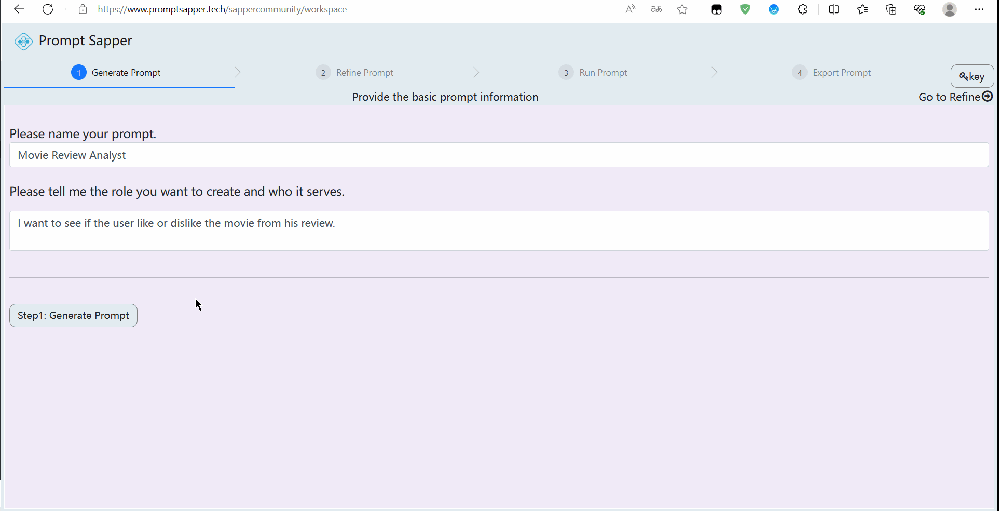

Step1: Generate Structured Prompt
Generate Structured Prompt
In this step, we designed the co-pilot based on LLM, which can generate an initial structured prompt according to user requirements.
As shown in the above figure, the user only needs to fill in the prompt name and the AI service function to be created, and then click the "Step: Generate Prompt" button. The co-pilot will automatically generate a structured prompt